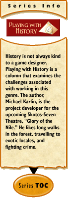

|
Playing with History #7: Death and Beyondby Michael Karlin “Death values a prince no more than a clown.” — Miguel de Cervantes, author Death is not the end! Well... maybe it is.A difficulty with staging a game in a real-life locale, be it historical or contemporary, is the issue of death. Netherworld or reincarnation theories are held by various cultures as explanations of what might occur after death, but none of these have been proven. From the perspective of an online game, death can end complete the story of a character, or merely interrupt it. In this article, I am going to approach the application of character death in a historical context. Death in Historical CulturesIf the possibility exists for death in your game, characters will die. It is a fact of gaming life that characters die, be it in an exploding spaceship in an old arcade shooter or to a lost battle in Grendel's Revenge. No matter the opportunities that you provide, or the incentives or punishments that you offer to elude death, characters will still end up dead and it will remain an issue that any developer will have to face. When working in a historical fiction setting, the developer has a paradigm of a given culture to work within. Various cultures perceive death differently. To the ancient Egyptians, most of life seemed to revolve around the eventuality of death. One of the first actions a new Pharaoh would take once ascended to the throne would be to construct a burial chamber. Some of the most honoured members of society were the ones who performed the embalming and funerary rites prescribed by Egyptian religious beliefs. While most cultures were not as necrocentric as the Egyptians, death affected them all in some way. Funerary beliefs are one aspect of the culture you are adapting that is easy to make authentic from an IC perspective. If deaths are limited (see below), then emphasise this. Dealing with Death in Online GamingAssuming a character can die, the game developer has a choice: allow characters to die a limited, or an unlimited number of times. If you choose a limited number of deaths, setting the number is important. If a character can die only once before it is deleted and the game is socially-oriented, think about making death a last resort. Provide credible, in-character opt-outs — ways to avoid the death even if a massive penalty is incurred. The unfortunate byproduct of one-death limits is the player's reluctance to take risks with the character, preferring to protect their investment (of time and effort). Glory of the Nile will have a limited amount of deaths, although the exact number has changed more often than a model in a fashion show. I'll update you along the way about what we finally decide. The nice aspect of limited deaths is that it allows for risk-taking while limiting "death abuse," or a character who dies constantly without much repercussion. This is a downside to the unlimited death scheme, though it can be dampened by placing a significant penalty on death. This penalty might be a reduction of skills or assets, or even social demotion or stigma.
Death is an inevitability in most games, but it does not have to be the end of character opportunities. Just like life, the perception of an afterlife changes the conduct of behaviour in life, so your choice of how you want to apply death will have significant impact on your players. Weigh the pros and cons, and do not choose lightly.
|